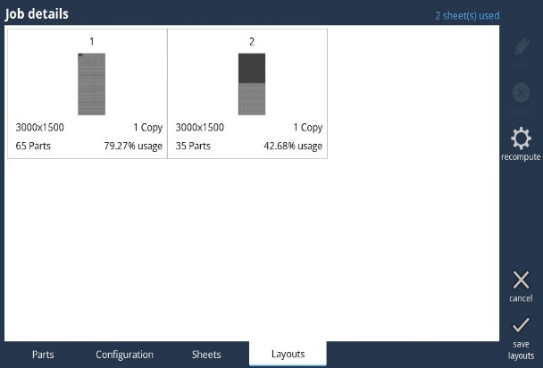

Anlegen
Auf dieser Seite werden alle verfügbaren DXF-Dateien angezeigt.

Job anlegen
Der Bediener muss eine oder mehrere der DXF-Dateien auswählen und anschließend die Schaltfläche Job anlegen betätigen. Wenn ein Job erstellt wurde, wird Ihnen eine Tab-Schnittstelle wie im Screenshot unten angezeigt. In diesem Fenster befinden sich die folgenden vier Tabs:
-
Tab Teile
-
Tab Konfiguration
-
Tab Tafeln
-
Tab Layouts
Tab Teile
Hier kann der Bediener beliebig viele Teile hinzufügen. Um alle Teile hinzuzufügen, müssen alle DXF-Dateien und anschließend Job erstellen gewählt werden. Auf dem Tab Teile kann der Bediener die maximale Menge, die Priorität, die Walzrichtung, die Teildrehung und die Gruppe ändern. Auf diesem Tab verwalten Sie die Liste der Teile (und deren erforderliche Mengen), die geschachtelt werden müssen.

Tab Konfiguration
Hier können Sie die Parameter wie Material, Dicke, Folie, Behandlung und Teilspalt ändern.

Tab Tafeln
Das ist der Tab, auf dem Sie die Liste der Tafeln verwalten, die beim Schachteln berücksichtigt werden sollen. Der Bediener kann Tafeln mit unterschiedlichen Größen hinzufügen. Er kann die Menge erhöhen oder verkleinern. Der Rand kann ebenfalls geändert werden.
Verwenden Sie TwinLine, wenn Sie eine effiziente Möglichkeit zur Bearbeitung Ihrer Teile benötigen.
Tab Layouts

Wenn Sie den Tab Layout auswählen, startet Vulcan Control automatisch die Berechnung der Schachtelung, wenn keine Layouts vorhanden sind. Sobald die Berechnung abgeschlossen ist, werden die berechneten Layouts in Form einer Liste von Miniaturansichten angezeigt. Sie können jedes dieser Layouts im Flux-Hauptfenster bearbeiten, indem Sie auf die Miniaturansicht klicken. Sie werden zu einem vollwertigen Layout-Editor geleitet, in dem Sie die Position/Ausrichtung von Teilen ändern, die Werkzeuge, die Reihenfolge usw. ändern können.
Betätigen Sie die Schaltfläche Neuberechnung, um die verbleibenden (nicht geschachtelten Teile) zu schachteln. Wenn Sie mit dem Schachteln noch einmal von vorn beginnen möchten, löschen Sie die vorhandenen Layouts und betätigen Sie dann diese Schaltfläche.
Wenn Sie die Schaltfläche Bearbeiten wählen, wird die Bearbeitungsseite für das Layout geöffnet, die in Abschnitt 3.3 eingehend erläutert wird. Bei Betätigen der Schaltfläche Abbrechen werden die hier vorgenommenen Änderungen nicht gespeichert.